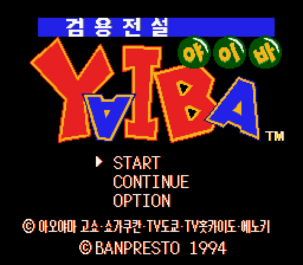
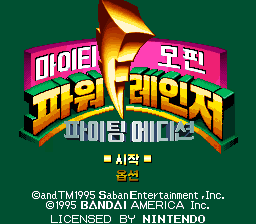
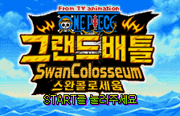
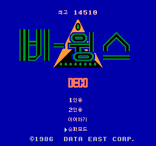
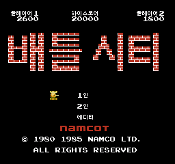
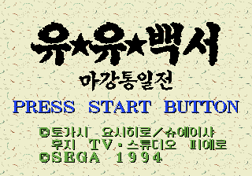

검용전설 야이바SFC
대사부터 간판까지 한국어로. 쓸 수 없던 구슬 넷을 되살리고 용신구슬로 하늘을 날 수 있습니다.
옛날 게임을 한국어로 옮기고, 하는 김에 조금씩 고쳐서 올립니다.

대사부터 간판까지 한국어로. 쓸 수 없던 구슬 넷을 되살리고 용신구슬로 하늘을 날 수 있습니다.

로고와 메뉴, 대전 화면을 한국어로. 기술표와 치트를 메뉴에서 바로 볼 수 있습니다.

원더스완 컬러용 대전 액션 게임을 한국어로 즐길 수 있게 했습니다.

메뉴와 스테이지 문구를 한국어로. 스테이지 선택과 날개를 마음대로 바꾸는 슈퍼모드를 넣었습니다.

타이틀 로고와 화면 표시를 한국어로 바꾸고, 일부 조작키를 편하게 고쳤습니다.

메가드라이브용 대전 격투 게임을 한국어로 즐길 수 있게 했습니다.